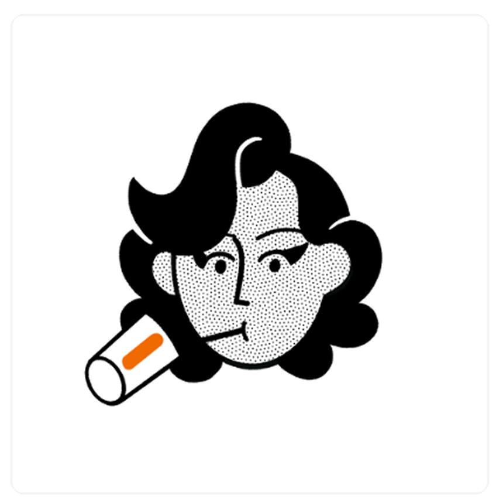

About
Hello, I'm Sammie. I currently head up UX Content Design at Angi, a home services marketplace that connects tradespeople to homeowners, with both B2C and B2B experiences.
I'm now based in London, after city-hopping from Miami → Chicago → NYC.
As a UX thinker, my primary interests are in behavioral design and the concept of nudges. As a numbers person, I strive to base design decisions in data and user insights, balancing user-centric advocacy and business needs.
I'm a thoughtful manager who has found developing career and craft growth rewarding. I like organizational strategy, and look for ways to improve or elevate team processes.
Since 2019, I've worked and partnered with the UX Content Collective. I've developed course and workshop materials, and have enjoyed writing about some of my favorite UX topics, published on their blog.
